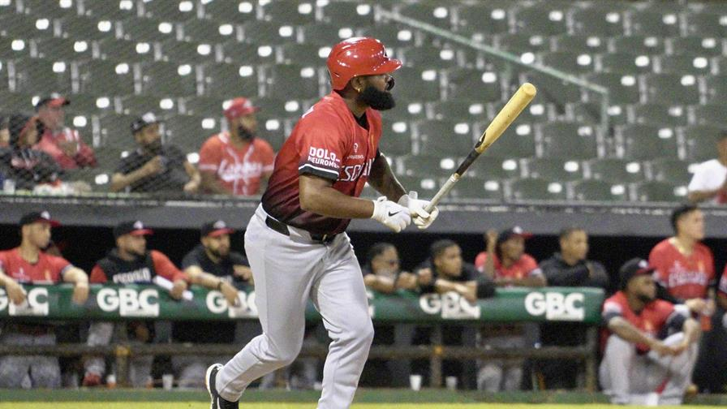
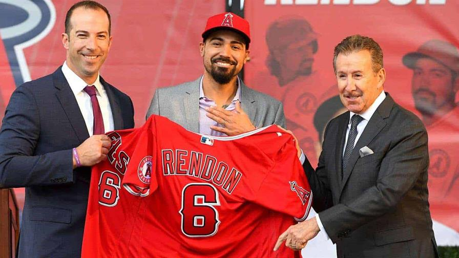
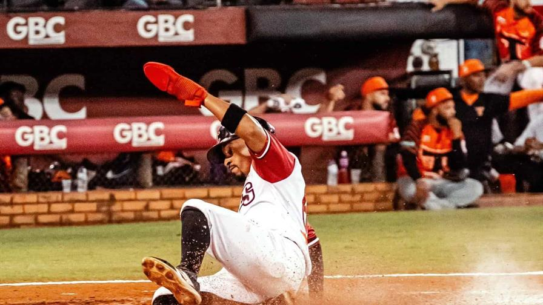
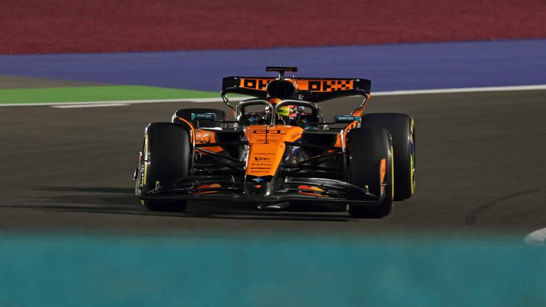

Periódico Digital HTML5 Semántico
Wayner Jesus Almonte Diaz
Deportes
Periódico Digital HTML5 Semántico
Navarro y Mateo remolcan dos cada uno en triunfo de los Leones sobre las Estrellas
Por: Daniel Santana

El inicialista Yamaico Navarro y el intermedista Jorge Mateo empujaron dos carreras cada uno y los relevistas
Fernando Abad y Luis Guerrero se combinaron para sofocar una rebelión de los locales en el noveno episodio para que los Leones del Escogido
vencieran 6-4 a las Estrellas Orientales, en partido celebrado en el Estadio Tetelo Vargas de San Pedro de Macorís.
Nacionales y Angelinos del 2019 suman a la lista de peores contratos los de Rendon y Strasburg
Por Diario Libre

En la historia de MLB, hay muchos contratos gigantes que a veces cumplen con las expectativas de los equipos que firmaron esos jugadores,
y en otros casos, al menos los jugadores se mantienen produciendo en niveles aceptables hasta los años finales de los pactos.
Los Gigantes castigan a Brooks y vencen a los Toros en el Julián Javier
Por: Romeo González

Los Gigantes del Cibao (12-16) vencieron con marcador 12-3 a los Toros del Este (14-15) al compás de 13 hits,
incluyendo dos cuadrangulares en la continuación de la temporada 2025-26 de la pelota invernal dominicana.
Piastri gana la pole para la esprint en Catar y mantiene viva la lucha por el título de F1
Por: AFP

El australiano Oscar Piastri, de McLaren, saldrá el sábado en cabeza de la carrera esprint del Gran Premio de Catar,
un resultado que mantiene con vida la lucha por el título de la Fórmula 1 en la penúltima prueba de la temporada.